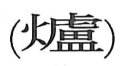

炉

Kun: irori | On: ro
hearth ・ furnace ・ stove
Explanation
A phono-semantic character: the fire element signals heat and burning, while the phonetic lu (from 盧) gives the sound. In the capital, at the start of the tenth lunar month, wine was poured and slices of meat were roasted in the hearth as people sat encircling it to drink and eat. This floor-set fireplace—the irori—is the warm communal hearth that the character names.